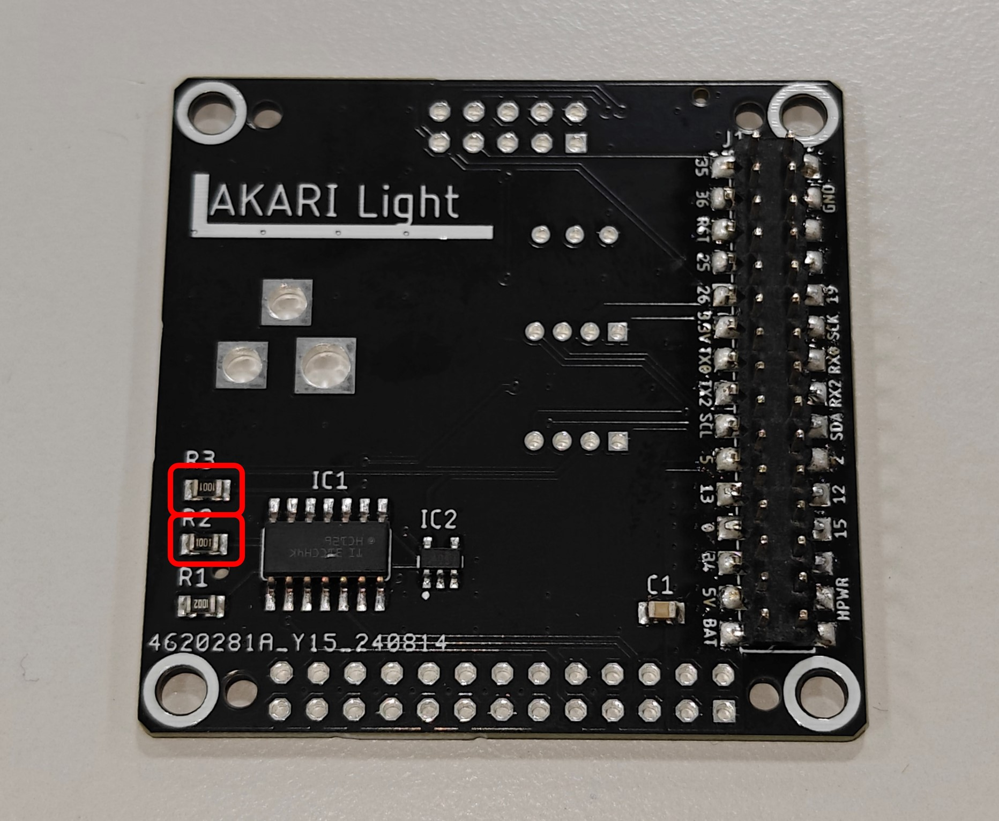
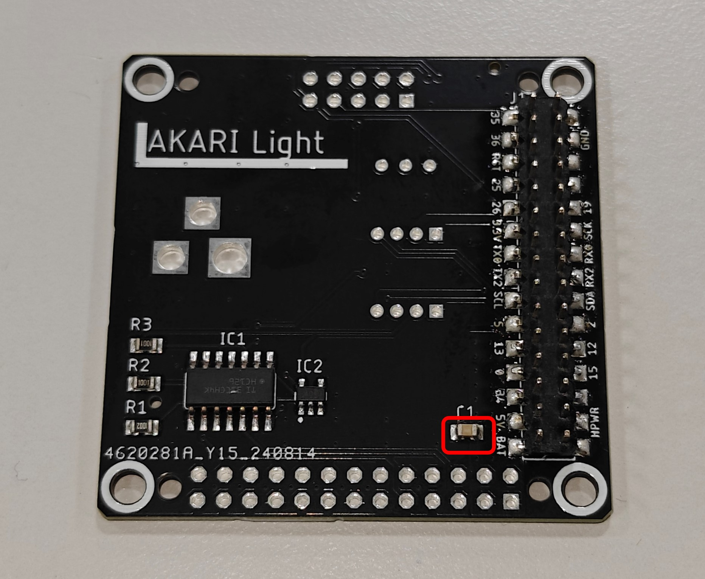
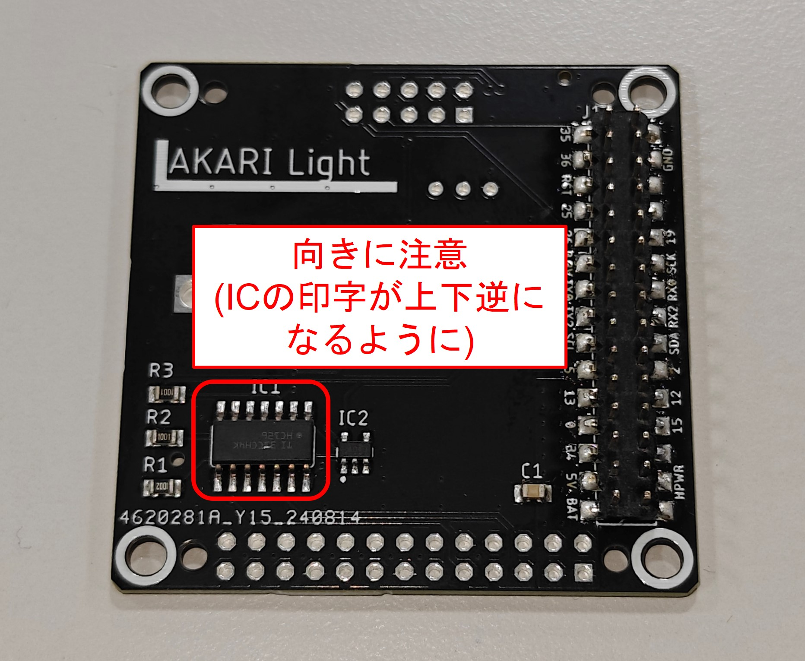
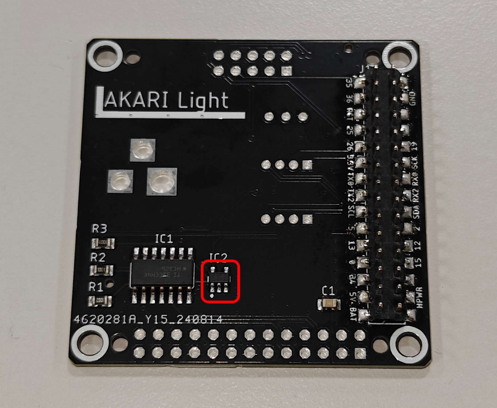

基板に部品を実装しよう(AKARI Light)
まずは基板に回路部品を実装していきましょう。
必要な道具
- はんだごて
- はんだ線
- ニッパ
1 表面実装部品の実装
基板を作ろう(AKARI Light) で実装済み基板を購入した場合この手順は不要です。
必要な部品
(1) M5stack基板(Light用) 1個
(2) チップ抵抗 10kΩ 0805 1個
(3) チップ抵抗 1kΩ 0805 2個
(4) コンデンサ 0.1uF 0805 1個
(5) バッファIC 1個
(6) インバータ1CH 1個
{kind=link}
手順
チップ抵抗 10kΩ 0805 をR1にはんだ付けする。
{kind=link}
2 チップ抵抗 1kΩ 0805 をR2, R3にはんだ付けする。
{kind=link}
3 コンデンサ 0.1uF 0805 をC1にはんだ付けする。
{kind=link}
4 バッファIC をIC1にはんだ付けする。
{kind=link}
5 インバータ1CH をIC2にはんだ付けする。
{kind=link}
2 接続部品の実装
必要な部品
表面実装部品実装済みのM5stack基板(Light用) 1個
(7) M5Stack用2x15ピンソケット 1個
(8) Raspberry Pi用 L字ピンソケット2x13(26P) 1個
(9) GROVEユニバーサル4ピンコネクター 2個
(10) MOLEX 3ピン2.5mmコネクター 1個
(11) DCジャック 2x5.5mm 1個
(12) ボックスヘッダ10P 1個
{kind=link}
手順
(7) M5Stack用2x15ピンソケット をM5stack基板(Light用)のJ1にはんだ付けする。
{kind=link}
(8) Raspberry Pi用 L字ピンソケット2x13(26P) をM5stack基板(Light用)のJ2にはんだ付けする。
- ピンが基板外側に向くようにすること
- 基板に対して、水平方向、垂直方向共に斜めにならないよう、並行にはんだ付けすること。
- かつ横から見たときに、基板とコネクタがピッタリ接触するようにすること。
- まずは両端のピンを1つずつはんだ付けしながら位置を調整し、位置が整ったら他のピンをはんだ付けするとよい。
- (10) MOLEX 3ピン2.5mmコネクターを使って基板の並行をとるとはんだ付けしやすい。
{kind=link}
{kind=link}
{kind=link}
(10) MOLEX 3ピン2.5mmコネクター をM5stack基板(Light用)のJ6にはんだ付けする。
基板のシルクと図を参照に向きを合わせること
{kind=link}
(9) GROVEユニバーサル4ピンコネクター をM5stack基板(Light用)のJ4,J5にはんだ付けする。
基板のシルクと図を参照に向きを合わせること
{kind=link}
(12) ボックスヘッダ10P をM5stack基板(Light用)のJ7にはんだ付けする。
切り欠きが基板内側に向くようにすること
{kind=link}
(11) DCジャック 2x5.5mm をM5stack基板(Light用)のJ3にはんだ付けする。
{kind=link}
以上で基板の実装は終わりです。
次はヘッド部の組み立てを行います。